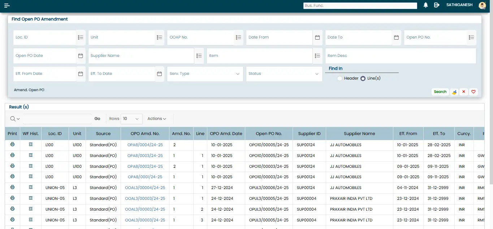
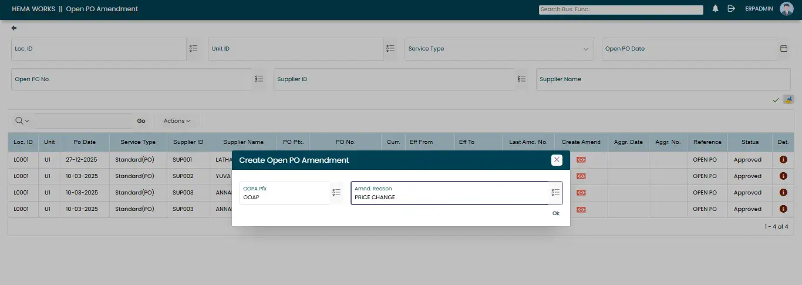
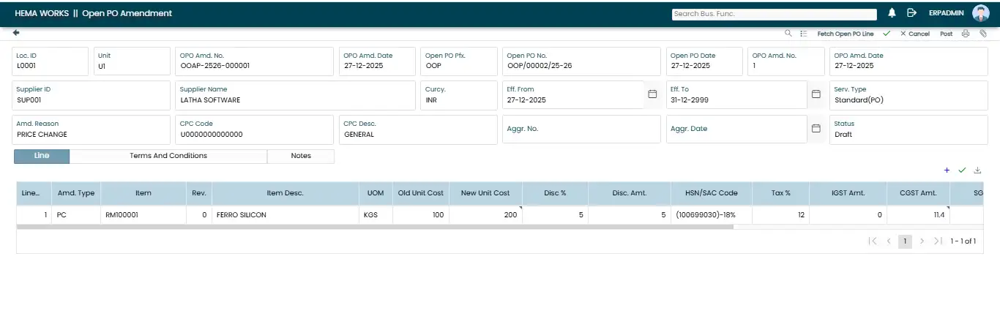

<div data-category="Purchase Order" data-title="Open/Blanket PO Amendment. /Entry" data-updated="December 01, 2025" data-contributors="RoadmapIT" data-breadcrumb="Home,Purchase Order,Open/Blanket PO Amendment. /Entry">
  <div class="page-content">
    <p>The Open Purchase Order document can be Amended using the Open/Blanket PO Amnd./Entry. The Amendment of the Open/Blanket PO is done by the Modify the Price, Addition of Item and Deletion of Existing Items or any changes in the Terms and Conditions.</p>

    
    <ul style="list-style-type: none; align-content: center">
      <li class="mouse-icon">Click Amend Open PO Button, system navigates to the list of approved Open blanket orders.</li>
    </ul>

    
    <ul style="list-style-type: none; align-content: center">
      <li class="mouse-icon">Select the document and choose the Amendment Reason.</li>
      <li class="mouse-icon">Click OK button, Amendment document created and Automatically screen Navigate into Transaction screen.</li>
      <li class="mouse-icon">A unique document Number will be generated for Open Purchase Order Amendment.</li>
    </ul>

    
    <ul style="list-style-type: none; align-content: center">
      <li class="mouse-icon">The line items of the open order document are fetched and selected using the Fetch PO Lines button.</li>
      <li class="mouse-icon">The Revised price for the line item is to be entered in the new unit cost field.</li>
      <li class="mouse-icon">The line items can be added or deleted for the open order document.</li>
      <li class="mouse-icon">
        Save
        <i class="bi bi-check-lg fs-4 mx-1 text-success"></i>
        the Document.
      </li>
      <li class="mouse-icon">The Document will be sent for approval using the Post button.</li>
      <li class="mouse-icon">Using Cancel button, the document can be cancelled.</li>
      <li class="mouse-icon">In case of Doc. Forward, Log in Forward user.</li>
      <li class="mouse-icon">
        Click on View details
        <i class="bi bi-info-circle text-primary"></i>
        to view the specific document.
      </li>
      <li class="mouse-icon">Screen navigate into query screen to check the details.</li>
      <li class="mouse-icon">After click the close button document navigate into Approval screen.</li>
      <li class="mouse-icon">Choose the Approval/forward/Return button field and click Process button required process performed.</li>
    </ul>
  </div>
</div>
